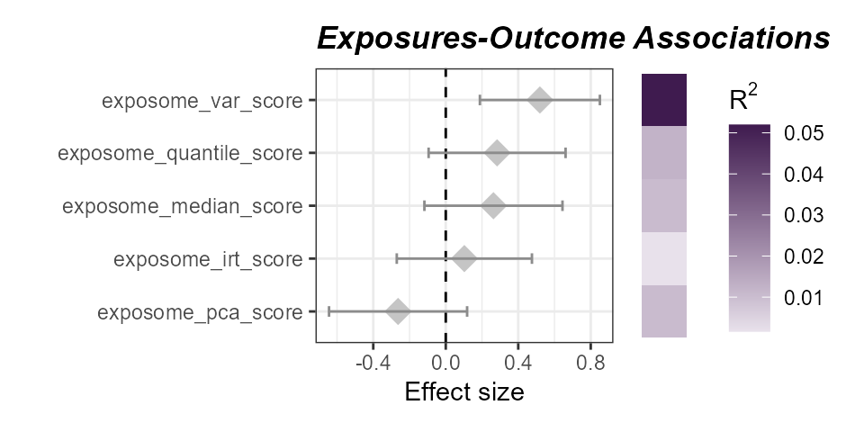

Load Data and Libraries
# Load Libraries
library(tidyverse)
library(tidyexposomics)We will start off with our example dataset pulled from the ISGlobal Exposome Data Challenge 2021 (Maitre et al., 2022).
# Load example data
data("tidyexposomics_example")
# Create exposomic set object
expom <- create_exposomicset(
codebook = tidyexposomics_example$annotated_cb,
exposure = tidyexposomics_example$meta,
omics = list(
"Gene Expression" = tidyexposomics_example$exp_filt,
"Methylation" = tidyexposomics_example$methyl_filt
),
row_data = list(
"Gene Expression" = tidyexposomics_example$exp_fdata,
"Methylation" = tidyexposomics_example$methyl_fdata
)
)## Ensuring all omics datasets are matrices with column names.## Creating SummarizedExperiment objects.## Creating MultiAssayExperiment object.## MultiAssayExperiment created successfully.We will focus on a few exposure variable categories.
# Grab exposure variables
exp_vars <- tidyexposomics_example$annotated_cb |>
filter(category %in% c(
"aerosol",
"main group molecular entity",
"polyatomic entity"
)) |>
pull(variable) |>
as.character()Quality Control
As in the main vignette, we will impute exposure data using
missforest.
# Impute missing values
expom <- run_impute_missing(
exposomicset = expom,
exposure_impute_method = "missforest",
exposure_cols = exp_vars
)## Imputing exposure data using method: missforestAnd we will transform our exposure data to ensure it is more normally
distributed using the boxcox_best method.
# Transform variables
expom <- transform_exposure(
exposomicset = expom,
transform_method = "boxcox_best",
exposure_cols = exp_vars
)## Applying the boxcox_best transformation.Exposome Scores
We can calculate exposome scores, which are a summary measure of
exposure. The run_exposome_score function is used to
calculate the exposome score. The exposure_cols argument is
used to set the columns to use for the exposome score. The
score_type argument is used to set the type of score to
calculate. Here we could use:
median: Calculates the median of the exposure variables.mean: Calculates the mean of the exposure variables.sum: Calculates the sum of the exposure variables.pca: Calculates the first principal component of the exposure variables.irt: Uses Item Response Theory to calculate the exposome score.quantile: Calculates the quantile of the exposure variables.var: Calculates the variance of the exposure variables.
The score_column_name argument is used to set the name
of the column to store the exposome score in. Here we will define a
score for aerosols using a variety of different methods and demonstrate
their use in association with asthma status.
# determine which aerosol variables to use
aerosols <- c("h_pm25_ratio_preg_None", "h_pm10_ratio_preg_None")
# Create exposome scores
expom <- expom |>
run_exposome_score(
exposure_cols = aerosols,
score_type = "median",
score_column_name = "exposome_median_score"
) |>
run_exposome_score(
exposure_cols = aerosols,
score_type = "pca",
score_column_name = "exposome_pca_score"
) |>
run_exposome_score(
exposure_cols = aerosols,
score_type = "irt",
score_column_name = "exposome_irt_score"
) |>
run_exposome_score(
exposure_cols = aerosols,
score_type = "quantile",
score_column_name = "exposome_quantile_score"
) |>
run_exposome_score(
exposure_cols = aerosols,
score_type = "var",
score_column_name = "exposome_var_score"
)## Extracting exposure data...
## Extracting exposure data...
## Extracting exposure data...
## Extracting exposure data...
## Extracting exposure data...## Calculating median exposure scores...## Calculating PCA exposure scores...## Calculating IRT exposure scores...## Warning: EM cycles terminated after 500 iterations.## Calculating quantile exposure scores...## Calculating variance exposure scores...We can then associate these exposome scores with asthma status using
the run_association function, just like we did before.
However, this time we specify our feature_set to be the
exposome scores we just calculated.
# Associate exposome scores with outcome
expom <- run_association(
exposomicset = expom,
outcome = "hs_asthma",
source = "exposures",
feature_set = c(
"exposome_median_score",
"exposome_pca_score",
"exposome_irt_score",
"exposome_quantile_score",
"exposome_var_score"
),
action = "add",
family = "binomial"
)## Running GLMs.
# Plot the association forest plot
plot_association(
exposomicset = expom,
source = "exposures",
terms = c(
"exposome_median_score",
"exposome_pca_score",
"exposome_irt_score",
"exposome_quantile_score",
"exposome_var_score"
),
filter_col = "p.value",
filter_thresh = 0.05,
r2_col = "r2"
)
Associations of aerosol exposome scores with asthma status. The variance-based score has the strongest association with asthma status.
Session Info
See Session Info
sessionInfo()
## R version 4.5.1 (2025-06-13 ucrt)
## Platform: x86_64-w64-mingw32/x64
## Running under: Windows 11 x64 (build 26200)
##
## Matrix products: default
## LAPACK version 3.12.1
##
## locale:
## [1] LC_COLLATE=English_United States.utf8
## [2] LC_CTYPE=English_United States.utf8
## [3] LC_MONETARY=English_United States.utf8
## [4] LC_NUMERIC=C
## [5] LC_TIME=English_United States.utf8
##
## time zone: America/New_York
## tzcode source: internal
##
## attached base packages:
## [1] stats4 stats graphics grDevices utils datasets methods
## [8] base
##
## other attached packages:
## [1] tidyexposomics_0.99.16 MultiAssayExperiment_1.36.1
## [3] SummarizedExperiment_1.40.0 Biobase_2.70.0
## [5] GenomicRanges_1.62.1 Seqinfo_1.0.0
## [7] IRanges_2.44.0 S4Vectors_0.48.0
## [9] BiocGenerics_0.56.0 generics_0.1.4
## [11] MatrixGenerics_1.22.0 matrixStats_1.5.0
## [13] lubridate_1.9.5 forcats_1.0.1
## [15] stringr_1.6.0 dplyr_1.1.4
## [17] purrr_1.2.0 readr_2.2.0
## [19] tidyr_1.3.2 tibble_3.3.0
## [21] ggplot2_4.0.2 tidyverse_2.0.0
## [23] BiocStyle_2.38.0
##
## loaded via a namespace (and not attached):
## [1] fs_2.1.0 naniar_1.1.0 httr_1.4.8
## [4] RColorBrewer_1.1-3 tools_4.5.1 doRNG_1.8.6.3
## [7] backports_1.5.0 R6_2.6.1 DT_0.34.0
## [10] vegan_2.7-3 mgcv_1.9-3 permute_0.9-10
## [13] withr_3.0.2 gridExtra_2.3 progressr_0.18.0
## [16] cli_3.6.5 textshaping_1.0.4 factoextra_2.0.0
## [19] RGCCA_3.0.3 labeling_0.4.3 sass_0.4.10
## [22] S7_0.2.1 randomForest_4.7-1.2 proxy_0.4-29
## [25] pbapply_1.7-4 pkgdown_2.2.0 systemfonts_1.3.2
## [28] foreign_0.8-90 R.utils_2.13.0 parallelly_1.46.1
## [31] sessioninfo_1.2.3 itertools_0.1-3 limma_3.66.0
## [34] rstudioapi_0.18.0 RSQLite_2.4.6 car_3.1-5
## [37] Matrix_1.7-4 clipr_0.8.0 abind_1.4-8
## [40] R.methodsS3_1.8.2 lifecycle_1.0.5 yaml_2.3.12
## [43] carData_3.0-6 recipes_1.3.1 SparseArray_1.10.8
## [46] BiocFileCache_3.0.0 grid_4.5.1 blob_1.3.0
## [49] promises_1.5.0 crayon_1.5.3 lattice_0.22-7
## [52] pillar_1.11.1 knitr_1.51 corpcor_1.6.10
## [55] future.apply_1.20.2 mixOmics_6.34.0 codetools_0.2-20
## [58] glue_1.8.0 beepr_2.0 data.table_1.18.2.1
## [61] vctrs_0.6.5 Rdpack_2.6.6 testthat_3.3.2
## [64] gtable_0.3.6 assertthat_0.2.1 cachem_1.1.0
## [67] gower_1.0.2 xfun_0.54 rbibutils_2.4.1
## [70] S4Arrays_1.10.1 mime_0.13 prodlim_2025.04.28
## [73] survival_3.8-3 timeDate_4052.112 audio_0.1-12
## [76] iterators_1.0.14 hardhat_1.4.2 lava_1.8.2
## [79] statmod_1.5.1 ipred_0.9-15 nlme_3.1-168
## [82] fenr_1.8.1 bit64_4.6.0-1 filelock_1.0.3
## [85] splines2_0.5.4 bslib_0.10.0 Deriv_4.2.0
## [88] otel_0.2.0 rpart_4.1.24 colorspace_2.1-2
## [91] DBI_1.3.0 Hmisc_5.2-5 nnet_7.3-20
## [94] tidyselect_1.2.1 bit_4.6.0 compiler_4.5.1
## [97] curl_7.0.0 httr2_1.2.2 htmlTable_2.4.3
## [100] desc_1.4.3 DelayedArray_0.36.0 bookdown_0.46
## [103] checkmate_2.3.4 scales_1.4.0 rappdirs_0.3.4
## [106] digest_0.6.39 rmarkdown_2.30 XVector_0.50.0
## [109] htmltools_0.5.9 pkgconfig_2.0.3 base64enc_0.1-6
## [112] SimDesign_2.24 dbplyr_2.5.2 fastmap_1.2.0
## [115] rlang_1.1.7 htmlwidgets_1.6.4 shiny_1.13.0
## [118] farver_2.1.2 jquerylib_0.1.4 jsonlite_2.0.0
## [121] BiocParallel_1.44.0 dcurver_0.9.3 ModelMetrics_1.2.2.2
## [124] R.oo_1.27.1 magrittr_2.0.4 Formula_1.2-5
## [127] patchwork_1.3.2 Rcpp_1.1.1 visdat_0.6.0
## [130] stringi_1.8.7 pROC_1.19.0.1 brio_1.1.5
## [133] MASS_7.3-65 plyr_1.8.9 parallel_4.5.1
## [136] listenv_0.10.1 ggrepel_0.9.7 splines_4.5.1
## [139] hms_1.1.4 igraph_2.2.2 ggpubr_0.6.3
## [142] ranger_0.18.0 ggsignif_0.6.4 rngtools_1.5.2
## [145] reshape2_1.4.5 GPArotation_2025.3-1 tidybulk_2.0.1
## [148] evaluate_1.0.5 BiocManager_1.30.27 tzdb_0.5.0
## [151] foreach_1.5.2 missForest_1.6.1 httpuv_1.6.16
## [154] future_1.70.0 mirt_1.46.1 BiocBaseUtils_1.12.0
## [157] broom_1.0.12 xtable_1.8-8 e1071_1.7-17
## [160] RSpectra_0.16-2 rstatix_0.7.3 later_1.4.8
## [163] class_7.3-23 ragg_1.5.0 rARPACK_0.11-0
## [166] memoise_2.0.1 ellipse_0.5.0 cluster_2.1.8.2
## [169] timechange_0.4.0 globals_0.19.1 caret_7.0-1